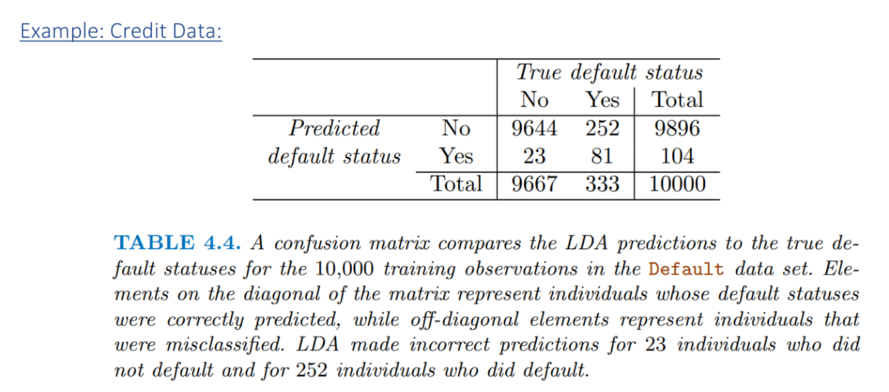
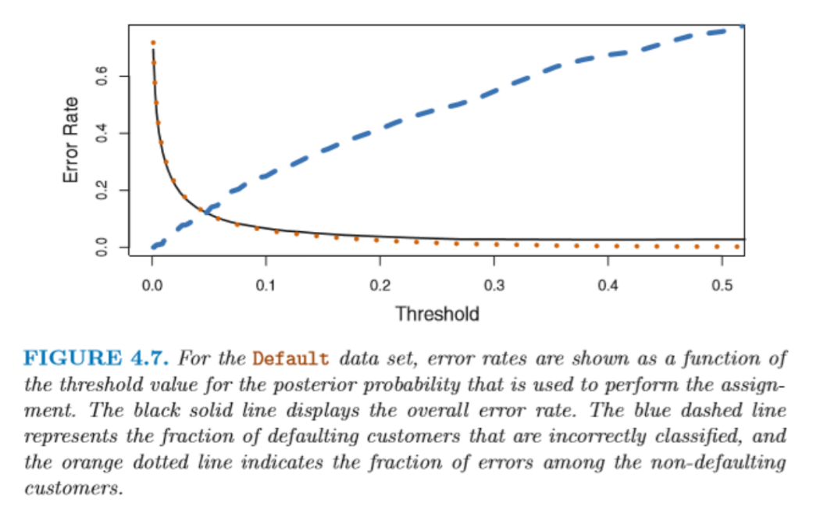
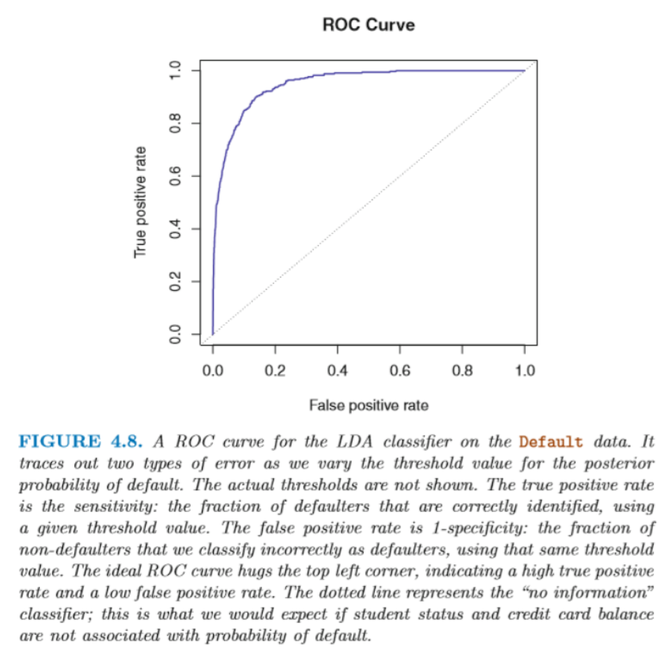
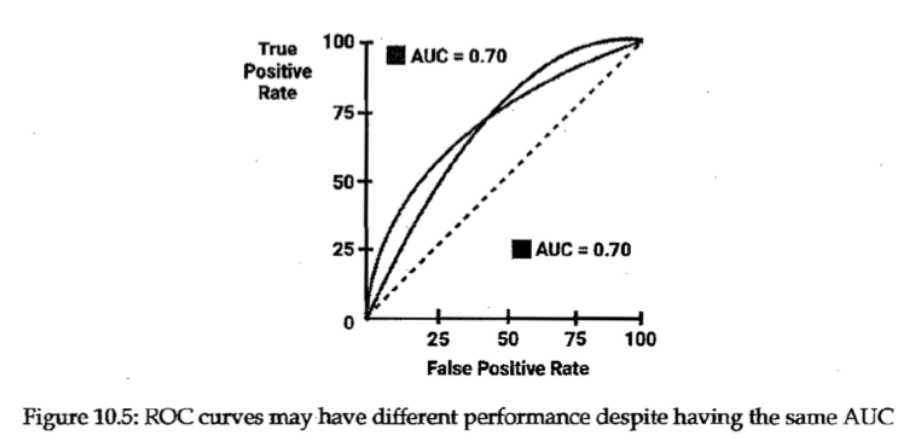

Week03: Evaluating the Performance of Binary Classification Models
1 Evaluating the Predictive Performance for Two Classes
Start experimenting with the R-script ROCTutorial.r.
Important R functions are:
Display a cross-tabulation of observed (rows) against predicted (column) class memberships: gmodels::CrossTable( )
Provide detailed statistics: caret::confusionMatrix( ). See online help help(confusionMatrix).
Receiver operating characteristic (ROC) curve: pROC::roc( ) or library(ROCR)
For the sake of terminology let us call one outcome as “positive”, which is usually an outcome of interest leading to action.
Think as a medical doctor for whom “positive”, means a test indicates the presence of a disease.
Usually rare classes (loan default, insurance fraud, disease outcome in a screening test, spam text messages etc.) are labelled “positive”.
Positives are usually coded as factor level 1 whereas the negatives are set to 0.
This convention makes sense under specific test scenarios but can be arbitrary if both classes are “value-free”.
For rare positives an intuitive negative prediction will lead to a small error rate equal to the frequency of the rare positives. This provides motivation for conditional error rates.
For just two classes we get “confusion matrix”, which has the observed true classes in its columns and the predicted class in its rows:
| True Negativ | True Positive | |
|---|---|---|
| Predicted Negative | True Negative (TN) | False Negative (FN) |
| Predicted Positive | False Positive (FP) | True Positive (TP) |
- This allows us to calculate several key statistics:
| Name | Definition | Synonyms |
|---|---|---|
| True pos. rate | \(TP/(FN + TP)\) | sensitivity, \(1 -\) Type \(II\) error, power, recall (column perspective) \(y\)-axis of ROC |
| True neg. rate | \(TN/(TN + FP)\) | specificity (column perspective) |
| False pos. rate | \(FP/(TN + FP)\) | Type \(I\) error, \(1 -\) specificity (column perspective) \(x\)-axis of ROC |
| Pos. pred. value | \(TP/(FP + TP)\) | Precision, \(1 -\) false discovery proportion (row perspective) |
| Total Accuracy | \(\frac{TP + TN}{TN + FP + FN + TP}\) | |
| Total Error Rate | \(\frac{FP + FN}{TN + FP + FN + TP}\) | \(1 -\) accuracy |
In the medical sciences
Sensitivity: probability of predicting disease given that the true state is positive.
Specificity: probability of predicting non-disease given that the true state is negative.
2 Receiver Operating Characteristics Curve
ROC curves are used to evaluate the model performance for binary classification scenarios.
Error rates are affected by a threshold probability \(\delta \in [0,1]\) of assigning an object \(y_i\) either to the positive \(\hat{y}_i = 1\) of negative \(\hat{y}_i = 0\) class in relation to the observed features \(\mathbf{x}_i\):
\[\hat{y}_i^{\delta} = 0 \text{ if } \widehat{\Pr(y_i = 1|\mathbf{x}_i)} \leq \delta\]
\[\hat{y}_i^{\delta} = 1 \text{ if } \widehat{\Pr(y_i = 1|\mathbf{x}_i)} > \delta\]
- Therefore, the true positive rate TPR and false positive rate FPS respectively become
\[\text{TPR}(\mathbf{y}, \hat{\mathbf{y}}^{\delta}) = \Pr(\hat{y}_i^{\delta} = 1|y_{obs} = 1) \text{ and}\]
\[\text{FPR}(\mathbf{y}, \hat{\mathbf{y}}^{\delta}) = \Pr(\hat{y}_i^{\delta} = 1|y_{obs} = 0)\]
Depending on the threshold \(\delta\) the total error rate, false positive rate (a.k.a. \(1 -\) specificity) and the true positive rate (a.k.a. sensitivity) change:
- For \(\delta = 0\) the table of predicted against observed cases becomes
\(y_{obs} = 0\) \(y_{obs} = 1\) \(\hat{y}^{\delta=0} = 0\) 0 0 0 \(\hat{y}^{\delta=0} = 1\) \(n_1\) \(n_2\) \(n\) \(n_1\) \(n_2\) \(n\) Thus \(sensitivity\ (TPR) = n_2/n_2 = 1\) and \(specificity\ (TNR) = 0/n_1 = 0\)
- For \(\delta = 1\) the table of predicted against observed cases becomes
\(y_{obs} = 0\) \(y_{obs} = 1\) \(\hat{y}^{\delta=0} = 0\) \(n_1\) \(n_2\) \(n\) \(\hat{y}^{\delta=0} = 1\) 0 0 0 \(n_1\) \(n_2\) \(n\) Thus \(sensitivity\ (TPR) = 0/n_2 = 0\) and \(specificity\ (TNR) = n_1/n_1 = 1\)
3 Example: Credit Data:

The training error rate is low with \((252 + 23)/10,000 \times 100 = 2.75\%\).
However, using a naïve but useless classifier in which no one defaults would only lead to a just slightly larger error rate of \(333/10,000 \times 100 = 3.33\%\).
To catch more true positive defaulter, i.e., increase the sensitivity, the cut of value \(\delta\) must become smaller than \(\delta = 0.5\) at the risk of denying more trustworthy borrowers.

- The ROC (radio operating characteristic) plots the false positive rate (\(1 -\) specificity) on the \(x\)-axis against the true positive rate (sensitivity) on the \(y\)-axis.

For an uninformative predictor the equality \(sensitivity = 1 - specificity\) holds at any threshold \(\delta \in [0,1]\). Thus the diagonal signifies an uninformative classifier.
For a well-discriminating classifier, the ROC curve takes a rectangular shape:
The upper left corner denotes that predictor for which all positives are properly classified, and no negative is falsely classified.
The area underneath the ROC curve (AUC) measures the discriminating power of a classifier:
0.9 to 1.0: outstanding
0.8 to 0.9: good
0.7 to 0.8: fair
0.6 to 0.7: poor
0.5 to 0.6: no discrimination
Two competing classifiers may have an identical AUC but different shapes of the ROC curve.
